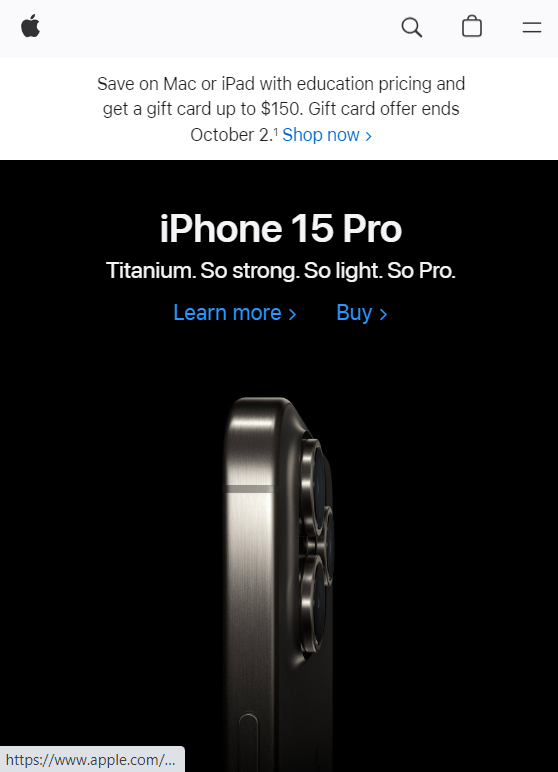
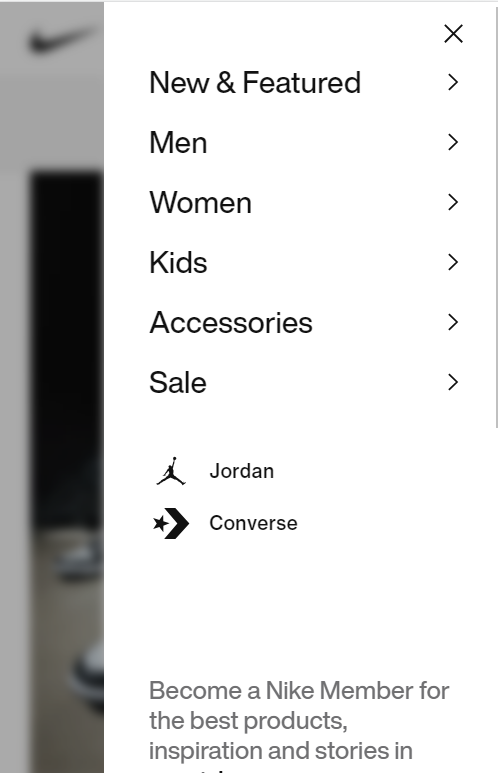

Visual Hierarchy
Apple Inc.
There is a contrast between the white in the header, and the black below, which is advertizing their newest iPhone. They want the user of their website to (1) see their new iPhone and (2) see their navigation bar above to find what you're looking for.
Hick's Law
Nike
Althought Nike sells thousands of products, their navigation menu is simple, only consisting of six options to choose from. This is following Hick's Law which says if there are less options to choose from, the shorter time it will take a user to decide which option to pick.
Rule of Thirds
Honda

Honda's website uses rule of thirds in their adversiting of their different Honda car brands. They place a logo of the brand (Honda) over one third of the of page, placed next to a photo of their car that cover two thirds of the page. They do the same thing to advertize their motorcycles, their acura car brand, and their honda home line.